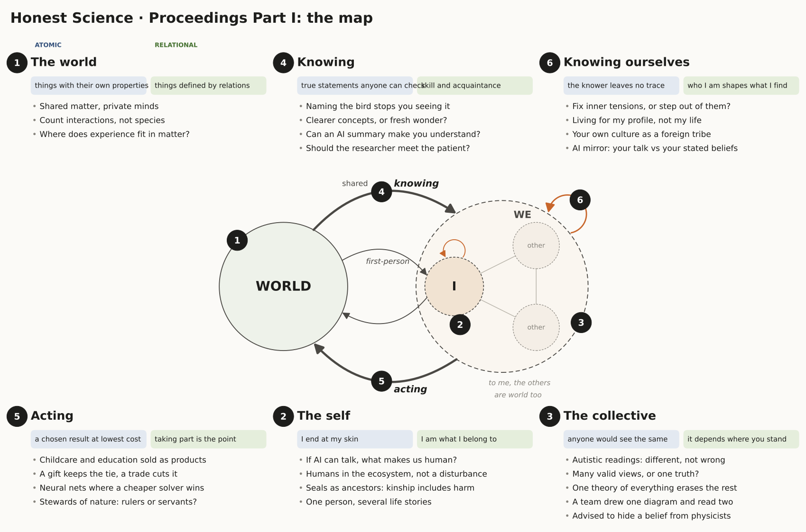
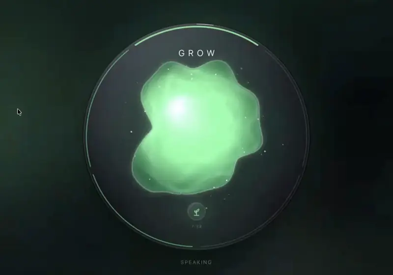

CSCSC
CSCSCComplexity Science and Contemplative Studies Consortium
Science studies the world. We also study the one looking.
A research community asking how order arises without anyone in charge, in cells, minds and societies, with mathematics and with first-person practice.
About 150 researchers · retreats in the Pyrenees and conference sessions in the US · a monthly call open to all
Speakers have included Michael Levin (Tufts), Martin Nowak (Harvard) and Gary Lupyan (UW-Madison).

What we do

Open questions, worked on together
Working groups on purpose in nature and on causality, a shared map of the field, and a review paper on a complexity theory of mindfulness, in preparation.
Research directions →
Meetings designed to think well
Week-long research retreats at INTP in the Pyrenees, a satellite session at the Complex Systems conference, and a monthly call.
Upcoming and past →
Things you can use
Work Alive, an app that guides focused work as a practice. Films and recorded talks, proceedings, and a questionnaire on how researchers come to know things.
Tools and media →From the room
A findingAsked where an observer's influence is most underestimated, 6 of 10 answers pointed to the step before measurement: choosing what to study.
A feeling"I feel calm, unlike most conference days."
People
Everyone →Physicists, biologists, cognitive scientists, philosophers and anthropologists, many with long contemplative practice. The community is run by volunteers, and it is young: its shape is still being worked out in public.
- Pavel ChvykovComplex systems, IGDORE
- Matthew McCarthyCollective imaginaries, VUB
- Matthieu BarbierTheoretical ecology; INTP
- Robert MarslandTheoretical ecology; Pontifical University of the Holy Cross
With INTP, Institut Natura e Teoria en Pirenèus · a satellite of CCS26, the Conference on Complex Systems
Join the community
- One email a month: calls, gatherings, new talks and writing, research and funding openings
- A monthly call, open to anyone curious
- A forum with a member map